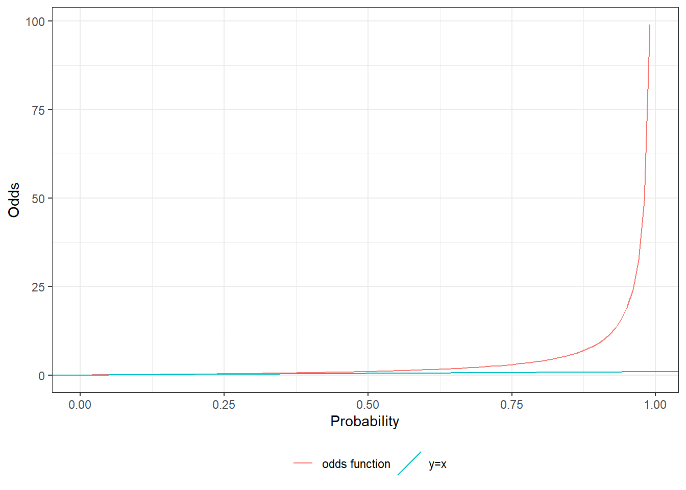
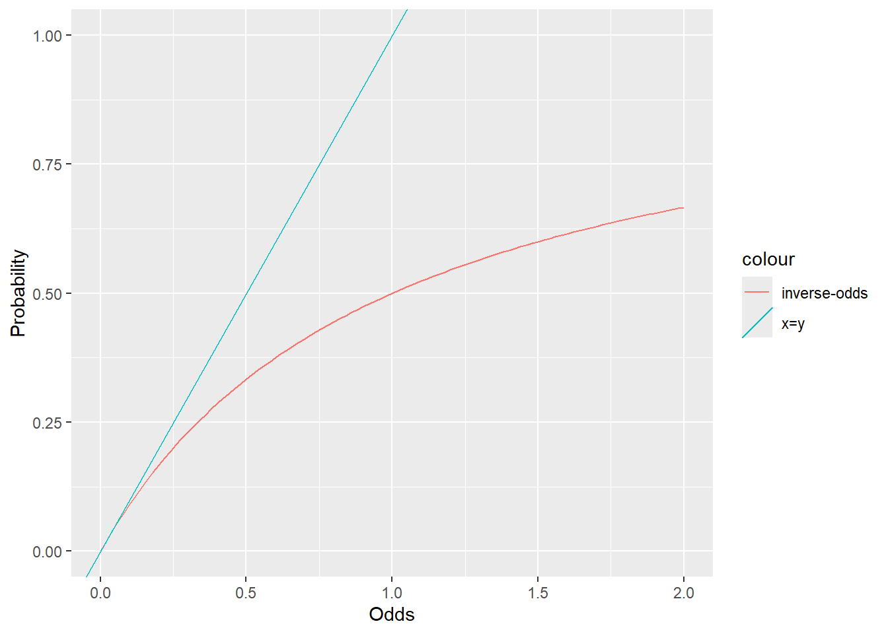
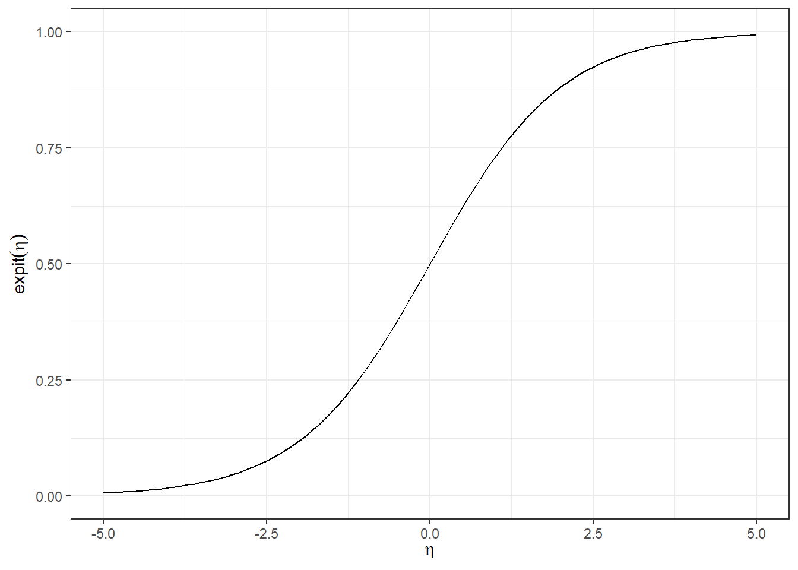
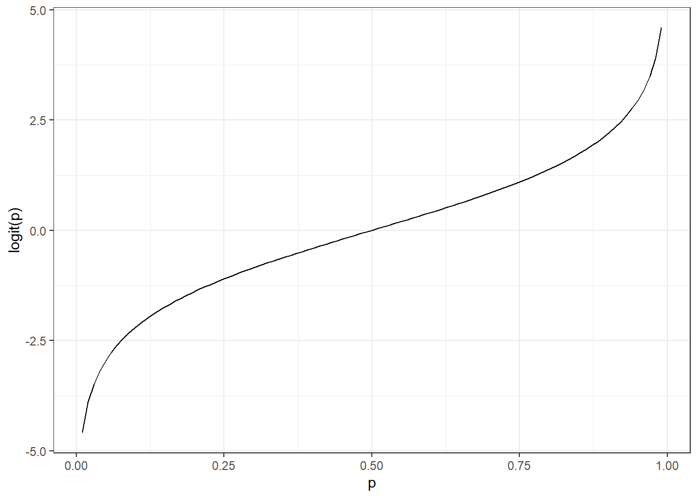

odds = function(pi) pi / (1 - pi)HW 3
1 Modeling binary outcomes
1.1
Implement the odds function, odds(𝑝)= \(\frac{p}{1-p}\)
1.2
Graph odds(𝑝) from 𝑝 = 0 to 𝑝 = .99.
library(ggplot2)
ggplot() +
geom_function(fun = odds,
mapping = aes(col = "odds function")) +
xlim(0, .99) +
xlab("Probability") +
ylab("Odds") +
geom_abline(aes(intercept = 0, slope = 1, col = "y=x")) +
theme_bw() +
labs(colour = "") +
theme(legend.position = "bottom")
1.3
Which is larger, the odds of an event or the probability of that event? Why?
The graph shows that when p > 0.5, the odds are greater that the probability because the event becomes more likely, the ratio of probability of occurrence to non-occurrence grows faster than the probability itself. Conversely, if p < 0.5, the probability is likely greater than the odds, because the probability event to not occur is greater than to occur. And for p = 0.5, the odds being 1 accurately represents that the probability event is just as likely to occur as not occur.
1.4
Implement the inverse odds function
\[ \pi(\omega) \stackrel{\text{def}}{=} \frac{\omega}{1 + \omega} \]
odds_inv = function(omega) (1 + omega^-1)^-11.5
Graph the inverse odds function from odds = 0 to odds = 2.
ggplot() +
geom_function(fun = odds_inv, aes(col = "inverse-odds")) +
xlab("Odds") +
ylab("Probability") +
xlim(0,2) +
ylim(0,1) +
geom_abline(aes(intercept = 0, slope = 1, col = "x=y"))
1.6
Implement the expit function, expit in code. \[ \pi(\eta) \stackrel{\text{def}}{=} \frac{e^\eta}{1 + e^\eta} \]
expit = function(eta) exp(eta)/(1+exp(eta))1.7
Graph the expit function from 𝑡 = −5 to 𝑡 = 5.
expit_plot =
ggplot() +
geom_function(fun = expit) +
xlim(-5, 5) +
ylim(0,1) +
ylab(expression(expit(eta))) +
xlab(expression(eta)) +
theme_bw()
print(expit_plot)
1.8
Use algebra to show that expit(0) = 0.5
\[ \pi(\eta) \stackrel{\text{def}}{=} \frac{e^\eta}{1 + e^\eta} \] \[\begin{aligned} \pi(0) &= \frac{e^0}{1 + e^0}\\ &= \frac{1}{1 + 1}\\ &= \frac{1}{2} = 0.5 \end{aligned} \]
1.9
Invert the expit function
\[ \begin{aligned} &\text{Given: } p = expit(t) = \frac{1}{1 + e^{-t}} \\ &\text{Rearrange for } e^{-t}: \\ &\quad p(1 + e^{-t}) = 1 \\ &\quad 1 + e^{-t} = \frac{1}{p} \\ &\quad e^{-t} = \frac{1}{p} - 1 \\ &\text{Take the natural logarithm: } \\ &\quad -t = \ln\left(\frac{1}{p} - 1\right) \\ &\quad t = -\ln\left(\frac{1}{p} - 1\right) \\ &\text{Simplify using } \frac{1}{p} - 1 = \frac{1-p}{p}: \\ &\quad t = -\ln\left(\frac{1-p}{p}\right) \\ &\quad t = \ln\left(\frac{p}{1-p}\right) \\ &\text{Thus, the logit function is: } \\ &\quad logit(p) = \ln\left(\frac{p}{1-p}\right) \end{aligned} \]
1.10
Interpret the logit function
Complete this sentence: “For an outcome that occurs with probability 𝑝, logit(𝑝) is the logarithm of the odds of that outcome occurring.”
1.11
Implement the logit function
logit = function(p) log(odds(p))1.12
Graph the logit function
logit_plot =
ggplot() +
geom_function(fun = logit) +
xlim(.01, .99) +
ylab("logit(p)") +
xlab("p") +
theme_bw()
print(logit_plot)
1.13
Use the logit function If the probability of an event is 0.95, what is the log-odds of that event?
logit.95 = logit (0.95)
logit.95[1] 2.944439The log-odds of the event for probability of 0.95 is 2.94.
1.14
Use the logit function again. What value of 𝑡 produces expit(𝑡) = .05?
logit.05 = logit (0.05)
logit.05[1] -2.944439the value of t which results in expit(t) of 0.05 is -2.94.
2 Odds Ratio
2.1
Suppose you have two probabilities, 𝜋1 and 𝜋2, with corresponding odds \(o_1 = \frac{\pi_1}{1 - \pi_1}\) and \(o_2 = \frac{\pi_2}{1 - \pi_2}\), and corresponding log-odds 𝛽1 = log{o1} and 𝛽2 = log{o2}.
Let 𝜙 denote the odds ratio, \(\frac{𝑜_2}{𝑜_1}\).
If 𝛽1 = 𝛽2, then what can we say about 𝜙?
Given two probabilities \(\pi_1\) and $_2 \(, with corresponding odds:\)$_1 = \[ \]_2 = \[ and corresponding log-odds: \] _1 = log(_1), _2 = log(_2) $$
Let \(\phi\) denote the odds ratio: \[ \phi = \frac{\theta_2}{\theta_1} \] If \((\beta_1 = \beta_2 )\), then: $ (_1) = (_2) $ implies $ _1 = _2 $
Therefore, the odds ratio \(\phi\) becomes: \[ \phi = \frac{\theta_2}{\theta_1} = \frac{\theta_1}{\theta_1} = 1 \]
Equality of the log-odds since 𝛽1 = 𝛽2, then we have log(o1) = log (o2). If the log of the odds are equal, then the odds themselves must be equal, so o1 = o2. As a result when substituting into \(\frac{𝑜_2}{𝑜_1}=1\)
Therefore, if 𝛽1 = 𝛽2, then 𝜙 = 1, indicating that the odds of the two events are identical, and there is no difference in the likelihood of one event occuring over the other in terms of odds.
2.2
Let 𝜋(𝑥) = expit{𝛽0 +𝛽1 ⋅𝑥} be a simple logistic regression model.
Show that if 𝛽1 = 0, then the odds ratio 𝜙(𝑎,𝑏) = odds(𝜋(𝑎))/odds(𝜋(𝑏)) = 1 for any 𝑎,𝑏.
Let \[\pi(x) = expit(\beta_0 + \beta_1 \cdot x)\] be a simple logistic regression model, where \[expit(z) = \frac{e^z}{1 + e^z}\]
Assume \[\beta_1 = 0\], which simplifies the model to: \[\pi(x) = expit(\beta_0)\]
This implies that for any \((a)\) and \((b)\): \[\pi(a) = expit(\beta_0)\] \[\pi(b) = expit(\beta_0)\]
The odds of \(\pi(x)\) are: \[\text{odds}(\pi(x)) = \frac{\pi(x)}{1 - \pi(x)}\]
Given that \(\pi(a) = \pi(b)\), the odds at \((a\)) and \((b)\) are: \[\text{odds}(\pi(a)) = \frac{expit(\beta_0)}{1 - expit(\beta_0)}\] \[\text{odds}(\pi(b)) = \frac{expit(\beta_0)}{1 - expit(\beta_0)}\]
Thus, the odds ratio \(\phi(a, b)\) is defined as: \[\phi(a, b) = \frac{\text{odds}(\pi(a))}{\text{odds}(\pi(b))}\]
Since both odds are equal, the odds ratio is: \[\phi(a, b) = \frac{\frac{expit(\beta_0)}{1 - expit(\beta_0)}}{\frac{expit(\beta_0)}{1 - expit(\beta_0)}} = 1\]
This shows that if \(\beta_1 = 0\), the odds ratio between any two values \((a)\) and \((b)\) is 1, indicating no effect of the predictor \((x)\) on the outcome.
3 WCGS Study
3.1
Download the data and load it into R
load("~/Classes/EPI 204/REPI204/wcgs.rda")3.2
Table 1 Produce a summary table summarizing and testing the univariate relationships between the outcome variable (chd69) and each covariate.
library(dplyr)
Attaching package: 'dplyr'The following objects are masked from 'package:stats':
filter, lagThe following objects are masked from 'package:base':
intersect, setdiff, setequal, unionlibrary(arsenal)
# Assuming 'wcgs' is your dataset
wcgs %>%
select(-c(id, uni, t1)) %>%
tableby(chd69 ~ ., data = .) %>%
summary(pfootnote = TRUE, title = "Baseline characteristics by CHD status at end of follow-up")| No (N=2897) | Yes (N=257) | Total (N=3154) | p value | |
|---|---|---|---|---|
| Age (years) | < 0.0011 | |||
| Mean (SD) | 46.082 (5.457) | 48.490 (5.801) | 46.279 (5.524) | |
| Range | 39.000 - 59.000 | 39.000 - 59.000 | 39.000 - 59.000 | |
| Arcus Senilis | < 0.0012 | |||
| N-Miss | 0 | 2 | 2 | |
| FALSE | 2058 (71.0%) | 153 (60.0%) | 2211 (70.1%) | |
| TRUE | 839 (29.0%) | 102 (40.0%) | 941 (29.9%) | |
| Behavioral Pattern | < 0.0012 | |||
| A1 | 234 (8.1%) | 30 (11.7%) | 264 (8.4%) | |
| A2 | 1177 (40.6%) | 148 (57.6%) | 1325 (42.0%) | |
| B3 | 1155 (39.9%) | 61 (23.7%) | 1216 (38.6%) | |
| B4 | 331 (11.4%) | 18 (7.0%) | 349 (11.1%) | |
| Body Mass Index (kg/m2) | < 0.0011 | |||
| Mean (SD) | 24.471 (2.561) | 25.055 (2.579) | 24.518 (2.567) | |
| Range | 11.191 - 37.653 | 19.225 - 38.947 | 11.191 - 38.947 | |
| Total Cholesterol | < 0.0011 | |||
| N-Miss | 12 | 0 | 12 | |
| Mean (SD) | 224.261 (42.217) | 250.070 (49.396) | 226.372 (43.420) | |
| Range | 103.000 - 400.000 | 155.000 - 645.000 | 103.000 - 645.000 | |
| Diastolic Blood Pressure | < 0.0011 | |||
| Mean (SD) | 81.723 (9.621) | 85.315 (10.311) | 82.016 (9.727) | |
| Range | 58.000 - 150.000 | 64.000 - 122.000 | 58.000 - 150.000 | |
| Behavioral Pattern | < 0.0012 | |||
| Type A | 1411 (48.7%) | 178 (69.3%) | 1589 (50.4%) | |
| Type B | 1486 (51.3%) | 79 (30.7%) | 1565 (49.6%) | |
| Height (inches) | 0.2901 | |||
| Mean (SD) | 69.764 (2.539) | 69.938 (2.410) | 69.778 (2.529) | |
| Range | 60.000 - 78.000 | 63.000 - 77.000 | 60.000 - 78.000 | |
| Ln of Systolic Blood Pressure | < 0.0011 | |||
| Mean (SD) | 4.846 (0.110) | 4.900 (0.125) | 4.850 (0.112) | |
| Range | 4.585 - 5.438 | 4.605 - 5.298 | 4.585 - 5.438 | |
| Ln of Weight | < 0.0011 | |||
| Mean (SD) | 5.126 (0.123) | 5.155 (0.118) | 5.128 (0.123) | |
| Range | 4.357 - 5.670 | 4.868 - 5.768 | 4.357 - 5.768 | |
| Cigarettes per day | < 0.0011 | |||
| Mean (SD) | 11.151 (14.329) | 16.665 (15.657) | 11.601 (14.518) | |
| Range | 0.000 - 99.000 | 0.000 - 60.000 | 0.000 - 99.000 | |
| Systolic Blood Pressure | < 0.0011 | |||
| Mean (SD) | 128.034 (14.746) | 135.385 (17.473) | 128.633 (15.118) | |
| Range | 98.000 - 230.000 | 100.000 - 200.000 | 98.000 - 230.000 | |
| Current smoking | < 0.0012 | |||
| No | 1554 (53.6%) | 98 (38.1%) | 1652 (52.4%) | |
| Yes | 1343 (46.4%) | 159 (61.9%) | 1502 (47.6%) | |
| Observation (follow up) time (days) | < 0.0011 | |||
| Mean (SD) | 2775.158 (562.205) | 1654.700 (859.297) | 2683.859 (666.524) | |
| Range | 238.000 - 3430.000 | 18.000 - 3229.000 | 18.000 - 3430.000 | |
| Type of CHD Event | ||||
| None | 0 (0.0%) | 0 (0.0%) | 0 (0.0%) | |
| infdeath | 0 (0.0%) | 0 (0.0%) | 0 (0.0%) | |
| silent | 0 (0.0%) | 0 (0.0%) | 0 (0.0%) | |
| angina | 2897 (100.0%) | 0 (0.0%) | 2897 (91.9%) | |
| 4 | 0 (0.0%) | 135 (52.5%) | 135 (4.3%) | |
| 5 | 0 (0.0%) | 71 (27.6%) | 71 (2.3%) | |
| 6 | 0 (0.0%) | 51 (19.8%) | 51 (1.6%) | |
| Weight (lbs) | < 0.0011 | |||
| Mean (SD) | 169.554 (21.010) | 174.463 (21.573) | 169.954 (21.096) | |
| Range | 78.000 - 290.000 | 130.000 - 320.000 | 78.000 - 320.000 | |
| Weight Category | < 0.0012 | |||
| < 140 | 217 (7.5%) | 15 (5.8%) | 232 (7.4%) | |
| 140-170 | 1440 (49.7%) | 98 (38.1%) | 1538 (48.8%) | |
| 170-200 | 1049 (36.2%) | 122 (47.5%) | 1171 (37.1%) | |
| > 200 | 191 (6.6%) | 22 (8.6%) | 213 (6.8%) | |
| RECODE of age (Age) | < 0.0012 | |||
| 35-40 | 512 (17.7%) | 31 (12.1%) | 543 (17.2%) | |
| 41-45 | 1036 (35.8%) | 55 (21.4%) | 1091 (34.6%) | |
| 46-50 | 680 (23.5%) | 70 (27.2%) | 750 (23.8%) | |
| 51-55 | 463 (16.0%) | 65 (25.3%) | 528 (16.7%) | |
| 56-60 | 206 (7.1%) | 36 (14.0%) | 242 (7.7%) |
- Linear Model ANOVA
- Pearson’s Chi-squared test
chd_model1 = glm(
"formula" = chd69 == "Yes" ~ dibpat*age,
"data" = wcgs,
"family" = binomial(link = "logit")
)
library(parameters)
chd_model1 |> parameters() |> print_md()| Parameter | Log-Odds | SE | 95% CI | z | p |
|---|---|---|---|---|---|
| (Intercept) | -5.50 | 0.67 | (-6.83, -4.19) | -8.18 | < .001 |
| dibpat (Type B) | -0.30 | 1.18 | (-2.63, 2.02) | -0.26 | 0.797 |
| age | 0.07 | 0.01 | (0.05, 0.10) | 5.24 | < .001 |
| dibpat (Type B) × age | -0.01 | 0.02 | (-0.06, 0.04) | -0.42 | 0.674 |
vcov(chd_model1)|> pander::pander()| (Intercept) | dibpatType B | age | dibpatType B:age | |
|---|---|---|---|---|
| (Intercept) | 0.4516 | -0.4516 | -0.00916 | 0.00916 |
| dibpatType B | -0.4516 | 1.404 | 0.00916 | -0.02894 |
| age | -0.00916 | 0.00916 | 0.0001885 | -0.0001885 |
| dibpatType B:age | 0.00916 | -0.02894 | -0.0001885 | 0.0006055 |
library(dplyr)
chd_grouped_data <- wcgs %>%
summarize(
.by = c(age, dibpat),
n = n(),
`p(chd)` = mean(chd69 == "Yes"), # Direct calculation of mean for CHD event
`odds(chd)` = `p(chd)` / (1 - `p(chd)`), # Calculating odds
`logit(chd)` = log(`odds(chd)`) # Calculating logit
)
head(chd_grouped_data)# A tibble: 6 × 6
age dibpat n `p(chd)` `odds(chd)` `logit(chd)`
<dbl> <fct> <int> <dbl> <dbl> <dbl>
1 50 Type A 76 0.105 0.118 -2.14
2 51 Type A 67 0.164 0.196 -1.63
3 59 Type A 30 0.233 0.304 -1.19
4 44 Type A 113 0.0796 0.0865 -2.45
5 47 Type A 72 0.0972 0.108 -2.23
6 40 Type A 133 0.0677 0.0726 -2.62chd_glm_strat = glm(
"formula" = chd69 == "Yes" ~ dibpat + dibpat:age - 1,
"data" = wcgs,
"family" = binomial(link = "logit")
)
chd_glm_strat |> parameters() |> print_md()| Parameter | Log-Odds | SE | 95% CI | z | p |
|---|---|---|---|---|---|
| dibpat (Type A) | -5.50 | 0.67 | (-6.83, -4.19) | -8.18 | < .001 |
| dibpat (Type B) | -5.80 | 0.98 | (-7.73, -3.90) | -5.95 | < .001 |
| dibpat (Type A) × age | 0.07 | 0.01 | (0.05, 0.10) | 5.24 | < .001 |
| dibpat (Type B) × age | 0.06 | 0.02 | (0.02, 0.10) | 3.01 | 0.003 |
3.3
Write down the mathemematical structure of the model
\[ \ logit (p)= \log\left(\frac{p}{1-p}\right) = X'\beta = \beta_0 + \beta_1 \times \text{dibpat}(\text{Type B}) + \beta_2 \times \text{age} + \beta_3 \times \text{dibpat}(\text{Type B}) \times \text{age}\\ \] ### 3.4
From the model outputs above, compute by hand the estimated probability of CHD for a 45-year old with a Type A personality.
\[ logit (p) = X'\beta = -5.50 -0.30 (\text{Type B}) + 0.07 (\text{age})- 0.01(\text{Type B}) (\text{age}) \]
\[ logit (Pr(Y=1| dibpat = Type A, age = 45)) =-5.50 -0.30 (0) + 0.07 (45)- 0.01(0) (45) \]
\[ \log\left(\frac{p}{1-p}\right)\ = -5.50 + 0.07(45) = -5.50+3.15 = -2.35 \]
Then, converting the log-odds to odds (p): \[ \left(\frac{p}{1-p}\right)=e^{ -2.35} = 0.095 \]
Find probability by converting odds to probability: \[ \pi(\omega) = \frac{\omega}{1 + \omega} = \frac{0.095}{1 + 0.095} = 0.087 \] Hence, the estimated probability of CHD for a 45-year-old with a Type A personality is approximately 0.086 or 8.6%
3.5
Confirm your results using the predict() function using the newdata argument.
new_data <- data.frame(
dibpat = "Type A",
age = 45
)
predicted_prob.a <- predict (chd_model1, newdata = new_data, type = "response")
predicted_prob.a 1
0.09423056 3.6
Compute the standard error of the log-odds of CHD for a 45-year-old with Type A personality
\[ SE_{\log\left(\frac{p}{1-p}\right)} = \sqrt{\text{Var}(\beta_0) + 45^2 \times \text{Var}(\beta_2) + 2 \times 45 \times \text{Cov}(\beta_0, \beta_2)} \]
coefs <- coef(chd_model1) # Extract coefficients
vcov_matrix <- vcov(chd_model1) # Variance-covariance matrix of the model
# For a 45-year-old Type A, only intercept and age coefficient are used
predictor_vector <- c(1, 0, 45, 0) # (Intercept, β1 for Type B, Age, β3 for Interaction)
# Calculating the standard error of the log-odds
SE_logodds_A.45 <- sqrt(t(predictor_vector) %*% vcov_matrix %*% predictor_vector)
SE_logodds_A.45 [,1]
[1,] 0.09425268the standard error of the log-odds of CHD for a 45-year-old with Type A personality is 0.09425268
3.7
Compute a confidence interval for the estimated probability of CHD for a 45-year-old with Type A personality
Using z-score od 1.96 for the normal distribution, the 95% confidence level is: \[ CI_{\log\left(\frac{p}{1-p}\right)} = \log\left(\frac{p}{1-p}\right) \pm 1.96 \times SE_{\log\left(\frac{p}{1-p}\right)} \]
log_odds = predict(chd_model1, newdata = new_data, type = "link")
ci_log_odds <- c(log_odds - 1.96 * SE_logodds_A.45, log_odds + 1.96 * SE_logodds_A.45)
ci_probability <- expit(ci_log_odds)
ci_probability[1] 0.07960137 0.11122341The 95% CI for the estimated probability of CHD for a 45-year-old with Type A personality is betweent 0.07960137 and 0.11122341
3.8
Compute the probability of CHD for a 45-year-old with a Type B personality, either by hand or using predict(). \[ logit (Pr(Y=1| dibpat = Type B, age = 45)) =-5.50 -0.30 (1) + 0.07 (45)- 0.01(1) (45) \] \[ \log\left(\frac{p}{1-p}\right)\ = -5.50 - 0.30 + 3.15 - 0.45 = -3.1 \]
Then, converting the log-odds to odds (p): \[ \left(\frac{p}{1-p}\right)=e^{ -3.1} = 0.045 \]
Find probability by converting odds to probability: \[ \pi(\omega) = \frac{\omega}{1 + \omega} = \frac{0.045}{1 + 0.045} = 0.043 \] Hence, the estimated probability of CHD for a 45-year-old with a Type B personality is approximately 0.043 or 4.3%
new_data2 <- data.frame(
dibpat = "Type B",
age = 45
)
predicted_prob.b <- predict (chd_model1, newdata = new_data2, type = "response")
predicted_prob.b 1
0.04596144 3.9
Compute the risk difference, risk ratio, and odds ratio comparing the two individuals described in the previous sections.
# Calculate the risk difference
risk_difference <- predicted_prob.a - predicted_prob.b
# Calculate the risk ratio
risk_ratio <- predicted_prob.a / predicted_prob.b
# Calculate the odds for each group
odds_a <- predicted_prob.a / (1 - predicted_prob.a)
odds_b <- predicted_prob.b / (1 - predicted_prob.b)
# Calculate the odds ratio
odds_ratio <- odds_a / odds_b
# Create a data frame to organize the results
Comparison <- data.frame(
Measure = c("Risk Difference", "Risk Ratio", "Odds Ratio"),
Value = c(risk_difference, risk_ratio, odds_ratio)
)
# Print the results table
Comparison|> pander::pander()| Measure | Value |
|---|---|
| Risk Difference | 0.04827 |
| Risk Ratio | 2.05 |
| Odds Ratio | 2.159 |
3.10
Recompute the odds ratio from the previous section; this time, write down the odds for each individual in terms of the 𝛽s, and then construct the ratio of these expressions and cancel terms to simplify the expression as much as possible.
\[ \ logit (p)= \log\left(\frac{p}{1-p}\right) = X'\beta = \beta_0 + \beta_1 \times \text{dibpat}(\text{Type B}) + \beta_2 \times \text{age} + \beta_3 \times \text{dibpat}(\text{Type B}) \times \text{age} \]
\(\text{For the Age 45, Type A}\)
\[ logit(\Pr(Y = 1 \mid \text{dibpat} = \text{Type A}, \text{age} = 45)) = \beta_0 + \beta_1 (0) + \beta_2 (45) + \beta_3 (0)(45) \\ = \beta_0 + \beta_2 (45)\\ odds(Age=45, Type=A)= e^{\beta_0 + \beta_2 (45)} \]
\(\text{For the Age 45, Type B}\)
\[ logit(\Pr(Y = 1 \mid \text{dibpat} = \text{Type B}, \text{age} = 45)) = \beta_0 + \beta_1 (1) + \beta_2 (45) + \beta_3 (1)(45) \\ = \beta_0 + \beta_1 + \beta_2 (45) + \beta_3(45)\\ odds(Age=45, Type=B)= e^{\beta_0 + \beta_1 + \beta_2 (45) + \beta_3(45} \]
Constructing odds ratio (OR):
\[ \text{OR}_{\text{Type A vs. Type B}} = \frac{\text{Odds}_{\text{Type A}}}{\text{Odds}_{\text{Type B}}} = \frac{e^{\beta_0 + \beta_2 \times 45}}{e^{\beta_0 + \beta_1 + \beta_2 \times 45 + \beta_3 \times 45}} \]
\(\text{Simplifying the Odds Ratio:}\)
\[ \text{OR}_{\text{Type A vs. Type B}} = e^{(\beta_0 + \beta_2 \times 45) - (\beta_0 + \beta_1 + \beta_2 \times 45 + \beta_3 \times 45)} = e^{-(\beta_1 + \beta_3 \times 45)} \] ### 3.11 Plug in the numerical estimates of the remaining 𝛽 or 𝛽s into the expression from the previous section. Does the result match the answer you got from brute-force calculation two subsections ago?
\[ \begin{aligned} \text{OR}_{\text{Type A vs. Type B}} = e^{-(\beta_1 + \beta_3 \times 45)} &= e^{-(-0.30+(-0.01)(45))}\\ &= e^{-(-0.30-0.45)}\\ &= e^{0.75} = 2.117 \end{aligned} \] Plugging the estimate coefficient of log odds from Table 1 to the formula in # 3.10 gives the same result (2.117) as the one computed by R model (2.159).
3.12
Using the approach from the subsection before last, determine the general formula for odds ratios comparing individuals with different ages who both have Type A personalities.
\[ \text{Odds for age}_1: \text{Odds}_{\text{age}_1} = e^{\beta_0 + \beta_2 \times \text{age}_1} \]
\[ \text{Odds for age}_2: \text{Odds}_{\text{age}_2} = e^{\beta_0 + \beta_2 \times \text{age}_2} \]
\[ \text{OR}_{\text{age}_1 \text{ vs. } \text{age}_2} = \frac{\text{Odds}_{\text{age}_1}}{\text{Odds}_{\text{age}_2}} = \frac{e^{\beta_0 + \beta_2 \times \text{age}_1}}{e^{\beta_0 + \beta_2 \times \text{age}_2}} \]
\(\text{Simplifying the Odds Ratio:}\)
\[ \text{OR}_{\text{age}_1 \text{ vs. } \text{age}_2} = e^{(\beta_0 + \beta_2 \times \text{age}1) - (\beta_0 + \beta_2 \times \text{age}_2)} = e^{\beta_2 \times (\text{age}_1 - \text{age}_2)} \]
3.13
Compute the odds ratio comparing a Type A 45-year-old with a Type A 47.25-year-old, using the shortcut from the previous section.
age_diff = 45-47.25
coef_age <- coef(chd_model1)["age"]
odds_ratio_age <- exp(coef_age * age_diff)
cat("Odds Ratio comparing a 45-year-old to a 47.25-year-old (Type A):", odds_ratio_age, "\n")Odds Ratio comparing a 45-year-old to a 47.25-year-old (Type A): 0.8506189 3.14
Compute a confidence interval for that odds ratio
se_age <- summary(chd_model1)$coefficients["age", "Std. Error"]
se_log_or_age <- se_age * age_diff
ci_lower_odds_age <- exp(log(odds_ratio_age) - 1.96 * se_log_or_age)
ci_upper_odds_age <- exp(log(odds_ratio_age) + 1.96 * se_log_or_age)
cat("95% Confidence Interval of OR age 45-year-old to 47.25-year-old:", ci_upper_odds_age, "to", ci_lower_odds_age, "\n")95% Confidence Interval of OR age 45-year-old to 47.25-year-old: 0.8006471 to 0.9037096 3.16
Compute the odds ratio comparing a Type A 47.25 year old with a Type B 47.25 year old.
\[ \text{OR}_{\text{Type A vs. Type B, for age 47.25 yo}} = e^{-(\beta_1 + \beta_3 \times 47.25)} \]
OR_AB_47.25 = exp(-(coef(chd_model1)["dibpatType B"]+(coef(chd_model1)["dibpatType B:age"]*47.25)))
cat("Odds Ratio comparing a 45-year-old to a 47.25-year-old (Type A):", OR_AB_47.25, "\n")Odds Ratio comparing a 45-year-old to a 47.25-year-old (Type A): 2.210314 3.17
Compute the odds ratio comparing a Type A 45 year old with a Type B 47.25 year old, by first computing the odds for each individual and then taking the ratio of those odds. \[ odds(Age=45, Type=A)= e^{\beta_0 + \beta_2 (45)}\\ odds(Age=47.25, Type=B)= e^{\beta_0 + \beta_1 + \beta_2 (47.25) + \beta_3(47.25)(1)} \]
# Extract the coefficients
b0 <- coef(chd_model1)["(Intercept)"]
b1<- coef(chd_model1)["dibpatType B"]
b2 <- coef(chd_model1)["age"]
b3 <- coef(chd_model1)["dibpatType B:age"]OR_B_47.25 = exp(b0 + b1 + b2 * 47.25 + b3 * 47.25)
OR_A_45 = exp(b0 + b2 * 45)
OR_A45_B47.25 = OR_A_45/OR_B_47.25
cat("Odds Ratio comparing a Type A 45-year-old with a Type B a 47.25-year-old:", OR_A45_B47.25, "\n")Odds Ratio comparing a Type A 45-year-old with a Type B a 47.25-year-old: 1.880135 3.18
Recompute the odds ratio from the previous subsection by multiplying the odds ratio for Type A 45-y.o. vs Type A 47.25-y.o. (from a few subsections ago) times the odds ratio for Type A 47.25 year old vs Type B 47.25 year old.
Multiplication_OR = odds_ratio_age *OR_AB_47.25
cat("the multiplication odds Ratio for Type A 45-y.o. vs Type A 47.25-y.o and Type A 47.25 year old vs Type B 47.25 year old is ", Multiplication_OR, "\n")the multiplication odds Ratio for Type A 45-y.o. vs Type A 47.25-y.o and Type A 47.25 year old vs Type B 47.25 year old is 1.880135 3.19
Compute the odds ratio comparing 49.15-year-old Type B versus 42.22-year-old type A, using the same shortcuts you used above.
OR_B_49.15 = exp(b0 + b1 + b2 * 49.15 + b3 * 49.15)
OR_A_42.22 = exp(b0 + b2 * 42.22)
OR_B49.15_A42.22 = OR_B_49.15/OR_A_42.22
cat("Odds Ratio comparing 49.15-year-old Type B versus 42.22-year-old type A is ", OR_B49.15_A42.22, "\n")Odds Ratio comparing 49.15-year-old Type B versus 42.22-year-old type A is 0.7301749 3.20
Compute a confidence interval for the odds ratio comparing 49.15-year-old Type B versus 42.22-year-old type A
# Standard errors
se_b1 <- sqrt(vcov(chd_model1)["dibpatType B", "dibpatType B"])
se_b2 <- sqrt(vcov(chd_model1)["age", "age"])
se_b3 <- sqrt(vcov(chd_model1)["dibpatType B:age", "dibpatType B:age"])
cov_b2_b3 <- vcov(chd_model1)["age", "dibpatType B:age"]
# Calculate the age difference
age_diff <- 49.15 - 42.22
# Compute the variance of the log of the odds ratio
var_log_OR <- se_b1^2 + (se_b2 * age_diff)^2 + (se_b3 * 49.15)^2 + 2 * cov_b2_b3 * age_diff * 49.15
# Calculate 95% Confidence Interval for log(OR)
ci_lower_B49.15_A42.22 <- log(OR_B49.15_A42.22) - 1.96 * sqrt(var_log_OR)
ci_upper_B49.15_A42.22 <- log (OR_B49.15_A42.22) + 1.96 * sqrt(var_log_OR)
# Convert log CI to OR CI
ci_lower_OR_B49.15_A42.22 <- exp(ci_lower_B49.15_A42.22)
ci_upper_OR_B49.15_A42.22 <- exp(ci_upper_B49.15_A42.22)
cat("95% Confidence Interval for the odds ratio comparing 49.15-year-old
Type B versus 42.22-year-old type A is [", ci_lower_OR_B49.15_A42.22 , ", ", ci_upper_OR_B49.15_A42.22 , "]\n")95% Confidence Interval for the odds ratio comparing 49.15-year-old
Type B versus 42.22-year-old type A is [ 0.02835548 , 18.80255 ]